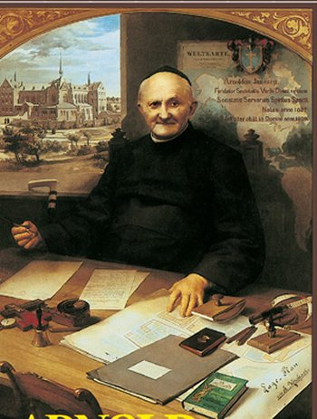
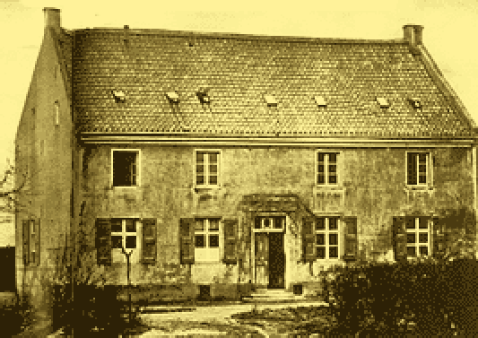
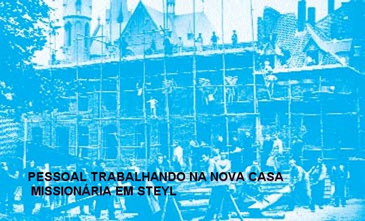
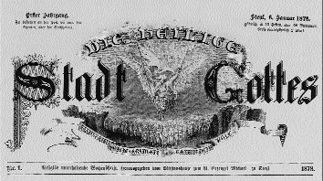

Como fruto destas
orações, ele compreendeu claramente a Vontade de DEUS: ele mesmo deveria tomar
em suas mãos a fundação de uma CASA MISSIONÁRIA.
Como fruto destas
orações, ele compreendeu claramente a Vontade de DEUS: ele mesmo deveria tomar
em suas mãos a fundação de uma CASA MISSIONÁRIA. “FUNDAÇÃO DA CASA MISSIONÁRIA”

PROJETO DA CASA DAS MISSÕES
No dia 23 de Maio de 1874 leu um artigo de Jornal que o Prefeito Apostólico de Hong-Kong, Monsenhor Dom Giovanni T. Raimondi, estava visitando Dr. von Essen, Pároco de Neuwerk. Com a necessária pressa, ali se apresentou, com a idéia de recolher informações acerca de Missões na China, para posterior publicação na Revista.
Padre Arnaldo aproveitou a oportunidade, e durante a conversa, apresentou o seu ideal: a fundação de um “Seminário de Missionários para a Igreja de língua Alemã”. O Bispo animou-o a unir-se na tarefa ao Pároco de Essen, que estava cheio de atenção também pela Obra Missionária em Luxemburgo. O Padre Arnaldo, não se sentiu animado, isto porque ele mesmo pensava que para a fundação de um Seminário do Gênero seria necessário um grande homem. Monsenhor Raimondi inspirado pelo ESPÍRITO SANTO, simplesmente disse:“Funde você mesmo! E junto com o Seminário, levante também uma Escola, onde bons rapazes possam dar os primeiros passos no caminho da sua formação para o Sacerdócio”. Padre Arnaldo rezou para ter Luz e Força.
Como fruto destas
orações, ele compreendeu claramente a Vontade de DEUS: ele mesmo deveria tomar
em suas mãos a fundação de uma CASA MISSIONÁRIA.
Era a vontade DIVINA!
Com a ajuda de alguns Bispos, Arnaldo inaugurou no dia 8 de Setembro de 1875 em Styel (Holanda) a “CASA MISSIONÁRIA”. A data 08/09/1875 é considerada como o dia da fundação da “CONGREGAÇÃO DO VERBO DIVINO”. Isto porque, nesta data mencionada, aconteceu o Primeiro Capítulo Geral da Comunidade Religiosa, no qual além de determinar as diretrizes de trabalho, foi escolhido de comum acordo, o nome da Ordem Religiosa. E assim, ao longo dos meses, depois de minuciosa organização e superadas todas as dificuldades, no dia 2 de Março de 1879, partiram os dois primeiros Missionários da CONGREGAÇÃO para a China. Um deles era José Freinadmetz, que foi um admirável e eficiente Missionário.
O Pároco von Essen não podia deixar a sua Paróquia, devido às leis do Kulturkampf: o seu Bispo não deu autorização. O Império Alemão ficou com a liderança prussiana. Desde o final de 1871 Bismark impôs severas condições ao Catolicismo no famoso “Kulturkampf”. Assim, Padre Arnaldo ficou sozinho com tão grande tarefa na mão.
PROCURA E COMPRA DO IMÓVEL
 Viajou até Velo.E na localidade próxima de Tegelem, encontrou
uma casa com grande quintal, que se prestava muito bem para o objetivo que ele desejava.
Porem o preço era muito alto. O proprietário vendia o imóvel por 45.000 Marcos. Mas
Padre Arnaldo não desanimou, pediu um tempo de espera. Visitou os Bispos da
Holanda pedindo-lhes a Bênção protetora para a obra; visitou alguns Seminários
Maiores, falou com os seminaristas aprestando-lhes a idéia.
Viajou até Velo.E na localidade próxima de Tegelem, encontrou
uma casa com grande quintal, que se prestava muito bem para o objetivo que ele desejava.
Porem o preço era muito alto. O proprietário vendia o imóvel por 45.000 Marcos. Mas
Padre Arnaldo não desanimou, pediu um tempo de espera. Visitou os Bispos da
Holanda pedindo-lhes a Bênção protetora para a obra; visitou alguns Seminários
Maiores, falou com os seminaristas aprestando-lhes a idéia.
O ancião Bispo de Roermond, Monsenhor Paredis, depois da visita do Padre Arnaldo falou para um sacerdote diocesano: “Esteve aqui o Padre Janssen, Capelão das Ursulinas de Kempem. Imagine-se, ele pretende fundar uma Casa Missionária, e não tem nenhum recurso financeiro! Realmente é um maluco, ou então é um Santo”.
O arcebispo Paulo
Melchers, de Colônia, ouvindo falar dos planos do Padre Arnaldo, disse:
«Vivemos tempos em que nada se mantém
de pé, e você pretende levantar algo novo?».
Naturalmente, ninguém podia lhe ajudar. O seu Bispo, Bernardo Brinkmann, de Münster, também não tinha possibilidades de ajudá-lo.
Entretanto tinha
aparecido uma nova oportunidade para responder ao sonho de Padre Arnaldo, que já
estava plenamente convencido de que a Obra era 
E partiu dali para a luta, publicando o seu ideal e colocando-o nas mãos dos leitores da Revista Missionária: “O Pequeno Mensageiro do SAGRADO CORAÇÃO DE JESUS”. A quantia poderia sair das doações dos pobres! E verdadeiramente foi acontecendo: Uma jovem, que entrou no Convento das Irmãs Clarissas de Düseldorf, trouxe o seu dote para entrar no Convento, que chegava a 9.000 Marcos. A Abadessa das Clarissas enviou este dinheiro à Nova Fundação do Padre Arnaldo. Um segundo presente de 6.000 marcos veio da jovem empregada Senhora Catarina Schell. Com este dinheiro Padre Arnaldo comprou a velha pousada junto ao Rio Mosela para fundar a primeira “Casa de Missões Alemã”. As oferendas dos pobres, mais uma vez, estavam nos alicerces das Congregações de Steyl.
Na continuidade foram chegando os primeiros colaboradores: o estudante de Teologia João Baptista von Anzer, do Seminário Maior de Regensburg; Francisco Reichart, de Vorarlberg, e o Padre Bill da Diocese de Luxemburgo.
No dia 16 de Junho de 1875 Padre Arnaldo assinou o contrato de compra, colocando num plano de execução o seu grande ideal. Comemorava-se nesta época, o aniversário de 200 anos das visões do SAGRADO CORAÇÃO DE JESUS por Santa Margarida Maria de Alacoque; como era natural, esse dia era celebrado com festa em muitos Conventos e Paróquias, por desejo do Papa Pio IX. Também Padre Arnaldo e os seus colaboradores consagraram-se ao “SAGRADO CORAÇÃO DE JESUS” , deixando tudo nas “DIVINAS MÃOS DE JESUS”! Padre Arnaldo resumiu o texto da oração do Santo Padre numa frase que passou a ser o emblema-espiritual dos Missionários de Steyl: «Viva o CORAÇÃO DE JESUS nos corações de todos».
Em 08 de Setembro de 1875 teve lugar a Bênção da Casa Missionária junto ao Rio Mosela. Nessa data a Igreja celebra a Festa do Nascimento de NOSSA SENHORA. É também a data do nascimento da CONGREGAÇÃO DOS MISSIONÁRIOS DO VERBO DIVINO - SOCIETAS VERBI DIVINI, SVD -. Foi uma grande festa para toda a aldeia de Steyl. O Santo Padre enviou uma Bênção Especial.
Ainda chegaram novos reforços humanos: o jovem Henrique Erlemann, de Wadersloh na Westfalia, que foi um autêntico presente do céu naqueles momentos: tomou a direção das construções e fabricou as mobílias necessárias para a instalação da Comunidade.
Chegou também um irmão do Padre Arnaldo, que era religioso Capuchinho, Irmão Junipero, homem de um humor invejável. Foi o cozinheiro da pequena Comunidade, e uma espécie de “mãe carinhosa” que consolava as tristezas e preocupações de todos os habitantes daquela Comunidade Missionária.
DIFICULDADES E PRIMEIROS PROBLEMAS
Todos os primeiros habitantes da CONGREGAÇÃO de Steyl, sem exceções, almejavam fervorosamente levar a graça de CRISTO aos povos que não o conheciam, dessa forma, ajudando a instaurar o Reino de DEUS. Com esse objetivo, buscavam escolher e decidir que tipo de organização interna seria a melhor para realizar este projeto.
Padre Arnaldo sonhava com uma “Congregação Missionária”, cuja regra possuísse normas de obediência a um Superior; assim ofereceu à pequena Comunidade uma Regra e um Horário que deveria reger a vida diária da Comunidade. Para programar isso, ele tomou por base e exemplo às grandes Ordens Religiosas que possuíam trabalho missionário. Por seu lado o Padre Bill e dois jovens seminaristas, com idéias “muito evoluídas” pensavam em outro caminho, sugerindo que a Comunidade fosse transformada numa Associação de Padres Diocesanos que se comprometiam com a Obra Missionária, “mas sem votos e sem nada que lembrasse à vida religiosa de uma Comunidade”.
Assim, já entre os primeiros colaboradores criou-se certo descontentamento, porque divergia frontalmente na organização pessoal administrativa, completamente diferente da sugestão tradicional do Padre Arnaldo na sua visão de vida para a Casa de Missões. Os que não concordavam chegaram a procurar apoios, com um argumento maldoso: «Padre Arnaldo Janssen não é a pessoa adequada para um empreendimento como a fundação da primeira Sociedade de Missões Alemã, ele é pouco prático».
Padre Arnaldo sofreu muito, e os seus colaboradores também. E, sobretudo, por não estar ainda bem claro o caminho a seguir; procurou na oração a necessária claridade de idéias. Arnaldo decidiu-se por um estilo de Sociedade Religiosa. O Padre Bill achou que não podia aceitar e retirou-se, e com ele o estudante Reichart; o jovem von Anzer continuou. A verdade é que estas dificuldades até ajudaram bastante a fazer com que o Padre Arnaldo e seu grupo, centrassem muito mais fervorosamente nas orações e no trabalho.
Tudo foi muito bom, porque com a saída daqueles dois, chegaram outros Sacerdotes mais interessados. No dia 02 de Junho de 1876, DEUS NOSSO SENHOR enviou ao Padre Arnaldo a bênção e a preciosa colaboração do seu irmão Padre João Janssen e um amigo dele, Hermann Wegener, ambos também Sacerdotes. Posteriormente, da Diocese de Bresannone, no Alto Adige italiano, veio o jovem sacerdote José Freinademetz. Significa dizer: não podiam ser melhores os primeiros confrades.
NOSSO SENHOR realmente abençoou o trabalho. Vieram jovens a Steyl para estudarem e se prepararem para a vida Missionária, e os Sacerdotes também trabalhavam firme como educadores. Em 15 de Agosto de 1876 foi Ordenado Sacerdote o jovem João Baptista von Anzer em Utrech; dois dias mais tarde aconteceu na CASA DE MISSÕES, a Primeira Santa Missa do novo sacerdote, e então, aproveitou-se o ensejo para lançar a primeira pedra do novo edifício, porquanto a velha pousada já tinha ficado muito pequena para a Comunidade que crescia vigorosamente. No segundo aniversário da Fundação teve lugar a Bênção do novo edifício, que já estava pronto. Os “profetas do contra” que tinham previsto o fracasso total tiveram que “reconsiderar as suas palavras” e olhar com visão serena e respeitosa, o sucesso do empreendimento do Padre Arnaldo.

Ampliação da CASA DA CONGREGAÇÃO MISSIONÁRIA DO VERBO DIVINO
A OBRA DOS EXERCÍCIOS ESPIRITUAIS
O novo edifício foi usado, sobretudo para os Sacerdotes que iniciaram a fazer nele os seus Exercícios Espirituais. O Arcebispo Paulo Melchers de Colônia, que morava em Maastricht por causa das leis do Kulturkampf impostas pelo Imperador Bismark, escreveu ao Padre Arnaldo apresentando a possibilidade dos Sacerdotes da sua Diocese vir fazer o retiro em Steyl, visto que na Alemanha estava mesmo muito difícil. Padre Arnaldo aceitou, e assim, junto com a idéia Missionária, foi crescendo em Steyl o “Apostolado dos Exercícios Espirituais”. Em 1877 houve em Steyl três cursos de Exercícios para Sacerdotes, um curso para Homens e outro para jovens.
Esse foi o início da Obra dos Exercícios em Steyl. Milhares de Sacerdotes e de Professores, Homens e Jovens, Mulheres e Moças passaram por Steyl e lá ficaram uns dias de reflexão e oração. Esta grande quantidade de gente que fizeram os Exercícios Espirituais, e que passaram por Steyl, ficou impressionada pela atitude do pessoal da casa, o elevado sentido de responsabilidade e do trabalho, revelando serem verdadeiramente, os melhores propagadores da Obra de Steyl.
EM QUALQUER ÉPOCA A GRÁFICA É FUNDAMENTAL
Tanto como
nos Exercícios Espirituais, o “Apostolado da Imprensa” foi que marcou o início
da Obra Missionária de Steyl. Sabemos que Padre Arnaldo esteve sempre 
A Gráfica de Steyl teve um início humilde, porem na sequência dos meses cresceu muito; foram aparecendo novas publicações: Stadt Gottes (1878), e, sobretudo, Michaelskalender desde 1880, que fizeram conhecida a “Casa de Missões”, e as obras da mesma na Alemanha e nos territórios de Missão.
A importância da Impressão Gráfica não pode ser deixada de lado. A intuição do Padre Arnaldo foi realmente importante; A Policia Social Nazista no tempo de Hitler, depois da ocupação da Holanda, uma das primeiras coisas que fez foi encerrar a Gráfica de Steyl no dia 12 de Fevereiro de 1941. Disse o terrível e sanguinário Ditador: “Agora, por fim, temos acabado com o centro de Ação dos Católicos”.